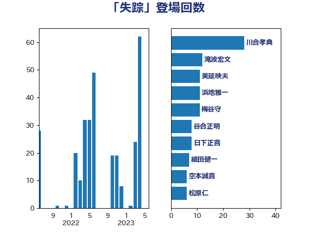

単語「失踪」

| 川合孝典 | 国民民主党 | 28 回 |
| 滝波宏文 | 自由民主党 | 12 回 |
| 美延映夫 | 日本維新の会 | 11 回 |
| 浜地雅一 | 公明党 | 11 回 |
| 梅谷守 | 立憲民主党 | 11 回 |
| 谷合正明 | 公明党 | 8 回 |
| 日下正喜 | 公明党 | 8 回 |
| 細田健一 | 自由民主党 | 7 回 |
| 空本誠喜 | 日本維新の会 | 6 回 |
| 松原仁 | 立憲民主党 | 6 回 |
| ながえ孝子 | 無所属 | 6 回 |
| 金村龍那 | 日本維新の会 | 5 回 |
| 笠井亮 | 日本共産党 | 5 回 |
| 鈴木庸介 | 立憲民主党 | 4 回 |
| 東徹 | 日本維新の会 | 4 回 |
| 古川禎久 | 自由民主党 | 4 回 |
| 齋藤健 | 自由民主党 | 3 回 |
| 清水真人 | 自由民主党 | 3 回 |
| 加藤勝信 | 自由民主党 | 3 回 |
| 中司宏 | 日本維新の会 | 3 回 |
| 高木啓 | 自由民主党 | 2 回 |
| 高木かおり | 日本維新の会 | 2 回 |
| 長島昭久 | 自由民主党 | 2 回 |
| 鈴木貴子 | 自由民主党 | 2 回 |
| 鈴木敦 | 国民民主党 | 2 回 |
| 赤池誠章 | 自由民主党 | 2 回 |
| 葉梨康弘 | 自由民主党 | 2 回 |
| 舩後靖彦 | れいわ新選組 | 2 回 |
| 笠浩史 | 無所属 | 2 回 |
| 竹内真二 | 公明党 | 2 回 |
| 浜田聡 | NHK党 | 2 回 |
| 林芳正 | 自由民主党 | 2 回 |
| 山谷えり子 | 自由民主党 | 2 回 |
| 三上えり | 立憲民主党 | 2 回 |
| 足立康史 | 日本維新の会 | 1 回 |
| 西岡秀子 | 国民民主党 | 1 回 |
| 窪田哲也 | 公明党 | 1 回 |
| 田中健 | 国民民主党 | 1 回 |
| 松本剛明 | 自由民主党 | 1 回 |
| 斎藤洋明 | 自由民主党 | 1 回 |
| 斉藤鉄夫 | 公明党 | 1 回 |
| 掘井健智 | 日本維新の会 | 1 回 |
| 後藤茂之 | 自由民主党 | 1 回 |
| 平沼正二郎 | 自由民主党 | 1 回 |
| 市村浩一郎 | 日本維新の会 | 1 回 |
| 岬麻紀 | 日本維新の会 | 1 回 |
| 太栄志 | 立憲民主党 | 1 回 |
| 佐藤英道 | 公明党 | 1 回 |
| 上田清司 | 国民民主党 | 1 回 |
| 三浦信祐 | 公明党 | 1 回 |